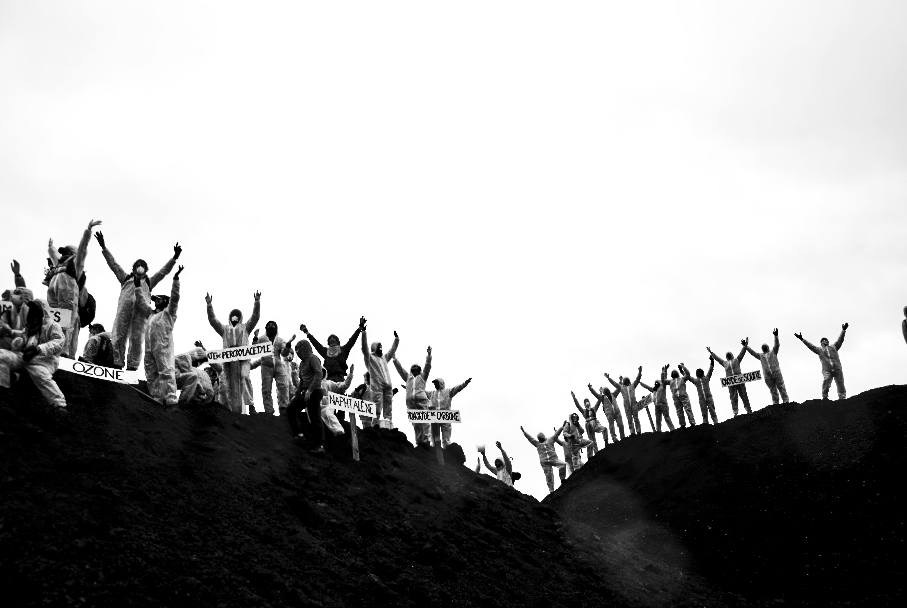
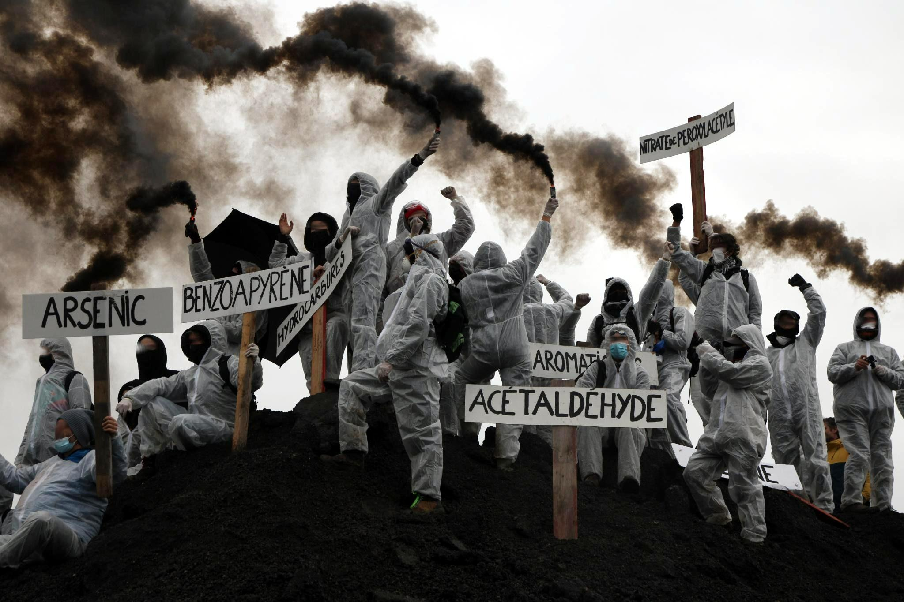
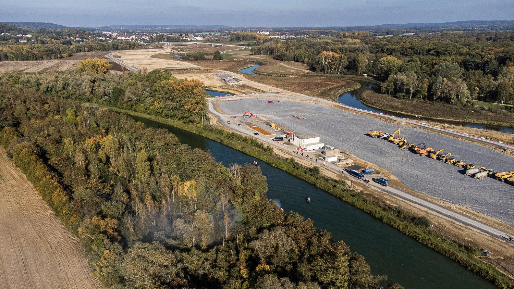
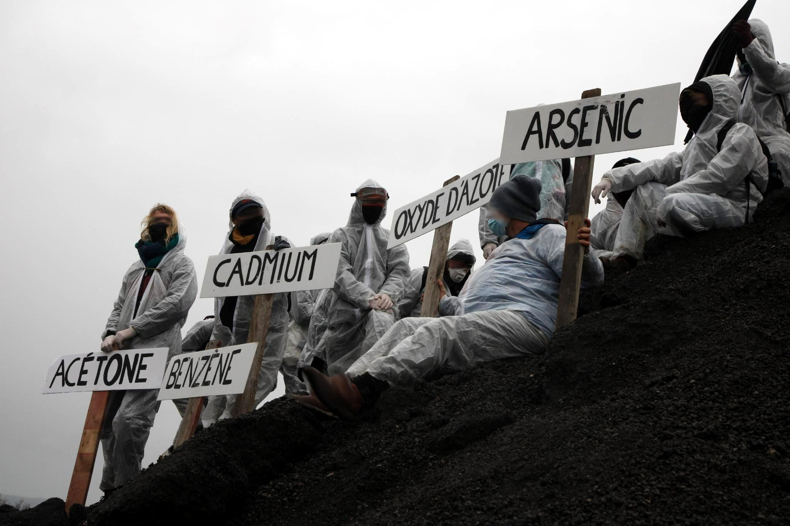
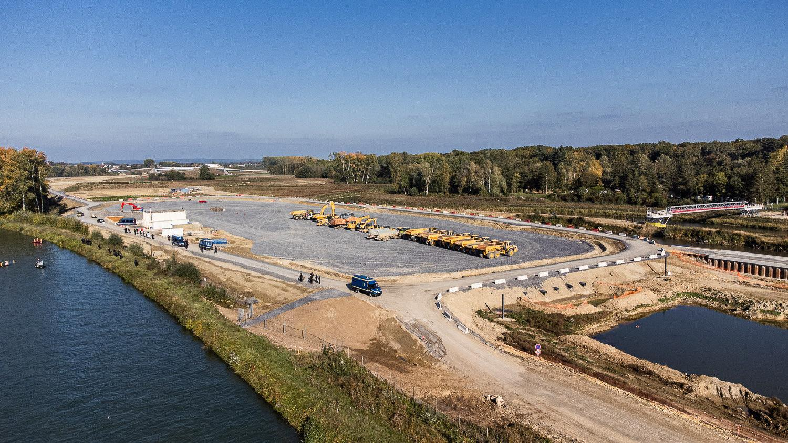
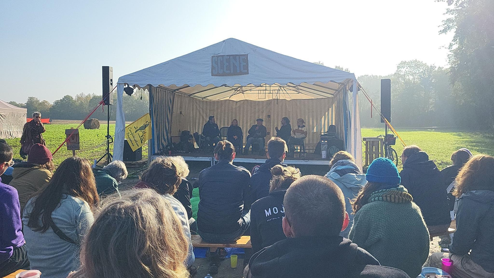

Le faux projet immobilier a été inventé pour attirer l'attention des Toulousains sur la question de la bétonisation des sol. En effet, si la prairie des Filtres est pour le moment préservée, ce n'est pas le cas de certaines zones naturelles autour de Toulouse !
ZAC du Rivel
Si le projet Andromède de Blagnac en est à sa dernière phase de construction, c'est le projet de création d'une ZAC au sud-ouest de Toulouse qui fait maintenant bondir citoyens et habitants du Sicoval. L'objectif est d'offrir aux entreprises un lieu d’implantation.
À terme, environ 68 % de sa surface accueillera des activités économiques, alors même que d'anciennes zones industrialo-commerciales délabrées ne demandent qu'à être réhabilitées et occupées (la coopé de Baziège qui tombe en lambeaux, ou la ZAC de Labège) !
Ce projet doit être porteur de nouveaux emplois, cependant la construction de l'entrepôt Lidl, projet à l'origine de la zac, non loin, raconte une tout autre histoire : le nombre d’employé.e.s venant de Baziège n’a sans doute jamais excédé quelques dizaines. Il faut encore ajouter la pollution sonore et lumineuse incessante, des mises en demeure de la DREAL ignorées, des procès avec les riverains.
De plus, les paysages du Rivel sont le dernier bastion de nombreuses espèces menacées comme Miniopterus schreibersii, qui est vulnérable, ou encore la rainette méridionale, qui est une espèce protégée.
Enfin, construire la ZAC signifie expulser un agriculteur et sa famille et artificialiser près de 80 ha de terres agricoles !
Poumon des Cepheides
C'est au sud de Toulouse, entre Blagnac et Beauzelle, que de nouveaux champs, prairies et friches vont être rasés dans le cadre de la phase 3 du projet Andromède. Ce projet est un non-sens absolu, puisqu'il va à l'encontre d'un arrêt du tribunal de Toulouse. En effet, il sacrifie l’équivalent de 75 terrains de football de nature vivante, un poumon vert irremplaçable, ce qui rentre en contradiction avec l'arrêt concernant le PLUi-H de 2019.
En outre, il condamne définitivement les derniers surplombs de la Garonne encore sauvages, véritables refuges pour la biodiversité, et piétine une zone classée et protégée "Natura 2000" (et toutes les espèces protégées qui y ont élu domicile…) sur le site de construction.
De plus, si ce projet de bétonisation était réalisé, il y aurait plus de trafic routier et de pollution aux abords de deux établissements scolaires et de la zone pavillonnaire, impactant la santé de tous.
Projet des Pradettes
Troisième bloc avec texte et image côte à côte, reprenant le schéma alterné.

L'artificialisation des sols
Tous ces lieux à sauvegarder préservés de toute pollution lumineuse sont aujourd’hui des lieux de balades où, promeneurs, cyclistes et joggeurs, photographes, naturalistes pratiquent leurs activités en toute quiétude. Tout comme les Toulousains peuvent compter sur la prairie des Filtres pour échapper à leurs soucis (et à la canicule) et profiter d'une pause bien méritée.
Tout cela vous semble bien loin ? Chaque mètre carré bétonné transforme Toulouse en fournaise, aggravant les canicules qui nous étouffent déjà chaque année. De plus, cela signifie aussi une diminution de la superficie des terres agricoles destinées à nous nourrir : perte de productivité agricole et limitation de la production alimentaire.
Ces projets s'inscrivent dans une volonté d'artificialiser toujours plus nos sols au nom d'un capitalisme prédateur, et toujours à l'encontre des habitants. En plus d'aller à l'encontre des grands engagements de zéro artificialisation et de préservation du vivant, ces projets sont dévastateurs à plus d'un titre. Il faut d'abord rappeler que le secteur de la construction engendre à lui seul plus de 37% des émissions de CO2 mondiales. Cette responsabilité est double puisque les sols ainsi bétonnés ne peuvent plus jouer leur rôle d'absorbeur du CO2. Au niveau local, ces nouvelles constructions renforcent les effets des îlots de chaleur et amplifient les phénomènes de ruissellement puis d'inondation.
En France, on extrait l’équivalent de 18 kg de sable par jour par habitant. Ces sites d’extraction ont un impact direct sur les nappes phréatiques et sur les sources d’eau à proximité. Ces trous servent ensuite de poubelles pour enfouir des déchets inertes – qui ne sont plus inertes au contact de l’eau. 76% des déchets en France sont issus du BTP.
Les sols, les ressources minérales, l’eau, le vivant, sont déplacés, épuisés, troqués, échangés au bon vouloir des bétonneurs. L’artificialisation est une des premières causes de la perte de biodiversité au monde. 50% de la disparition des espèces serait dûe à ce phénomène. 24 000 hectares de terres disparaissent tous les ans en France, soit 5 terrains de football/heure ou la surface de la Seine-Saint-Denis chaque année.
Le printemps des Luttes
Cette action s'inscrit dans le cadre du printemps des luttes, une initiative pour dénoncer l'artificialisation toujours plus injustifiée du territoire français. Ce phénomène provoque en effet plusieurs conséquences, directes ou non, sur la santé de tous et l'environnement.

Perte de biodiversité
a transformation d’un espace naturel en parking, immeuble... passe généralement par la destruction des habitats et leurs espèces animales et végétales présentes. Lorsqu’ils ne sont pas totalement détruits, ils sont pour beaucoup fortement réduits, ou fragmentés par différentes infrastructures comme des routes. Ces obstacles empêchent les animaux de se déplacer, de se nourrir, de se protéger et de se reproduire.

Changement climatique
ce sont les êtres vivants du sol qui lui permettent d’absorber du carbone. Or, plus un sol est artificialisé et donc dégradé, moins il est capable d’absorber du CO2.
De plus il contribue au phénomène d’îlot de chaleur urbain.
Par ailleurs, L'éloignement de l'habitat des zones d'emplois et de commerce engendre entre autres une hausse des besoins en transports, donc en énergie et pollutions.

Pollutions associées
des nuisances sonores, de la pollution lumineuse, de l’air, du sol et de l’eau accompagnent ces travaux et espaces construits, impactant les espèces et milieux restants.

Risques d’inondation
Un sol construit et imperméabilisé n’absorbe pas l’eau de pluie. En cas de fortes intempéries, les phénomènes de ruissellement et d’inondation sont donc amplifiés.
Réduction du potentiel agronomique des sols
la surface foncière disponible pour la production alimentaire de nos territoires diminue, ce qui entraine une perte de souveraineté alimentaire.

Baisse de la qualité des eaux
Pollution des eaux consécutives à l'amplification des ruissellements. Les eaux se chargeant d'hydrocarbures, de métaux lourds, d'engrais et de produits phytosanitaires...